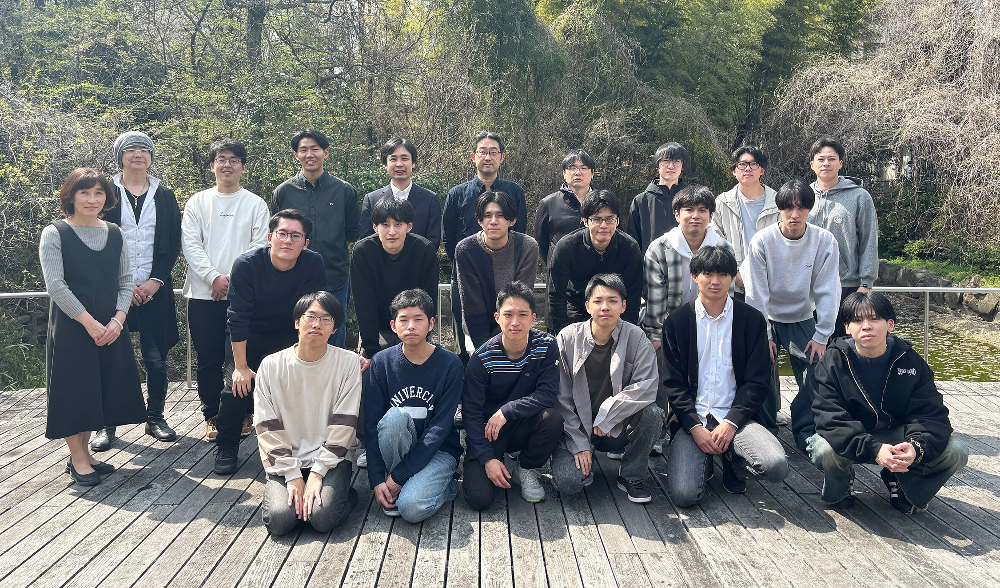

メンバー

教授
青井 伸也（HP）
Shinya AOI
准教授
小林 洋（HP）
Yo KOBAYASHI
助教
上村 知也（HP）
Tomoya KAMIMURA
招へい教授
和田 直己（山口大学名誉教授）
Naomi WADA
招へい准教授
安部 祐一（広島大学准教授）
Yuichi AMBE
特任研究員
冨田 望
Nozomi TOMITA
大島 裕子
Hiroko OSHIMA
招へい研究員
安達 真永（三菱電機株式会社リサーチアソシエイト）
Mau ADACHI
事務補佐員
宇田 恵
Megumi UDA
修士２年
岡本 蒼生
Soki OKAMOTO
鈴木 拓歩
Takuho SUZUKI
松尾 朝日
Asahi MATSUO
原口 雄世
Yusei HARAGUCHI
修士１年
隈元 亮佑
Ryosuke KUMAMOTO
橋本 大輝
Daiki HASHIMOTO
正城 創太郎
Sotaro MASAKI
眞野 風
Fu MANO
学部４年
大崎 壮太
Sota OSAKI
奥野 康祐
Kosuke OKUNO
高橋 康洋
Yasuhiro TAKAHASHI
土田 創太
Sota TSUCHIDA
橋本 貫汰
Kanta HASHIMOTO
橋本 峻利
Takatoshi HASHIMOTO
木下 大輔
Daisuke KINOSHITA
宮前 恒
Kou MIYAMAE
町田 颯太
Souta MACHIDA
森田 耀斗
Akito MORITA